소방설비기사(전기분야) (2021-05-15 기출문제)
1과목: 소방원론
1. 제3종 분말소화약제의 주성분은?
- 인산암모늄
- 탄산수소칼륨
- 탄산수소나트륨
- 탄산수소칼륨과 요소
(정답률: 82%)

2. 화재발생 시 피난기구로 직접 활용할 수 없는 것은?
- 완강기
- 무선통신보조설비
- 피난사다리
- 구조대
(정답률: 87%)
3. 소화약제 중 HFC-125의 화학식으로 옳은 것은?
- CHF2CF3
- CHF3
- CF3CHFCF3
- CF3I
(정답률: 69%)
4. 위험물안전관리법령상 제6류 위험물을 수납하는 운반용기의 외부에 주의사항을 표시하여야 할 경우, 어떤 내용을 표시하여야 하는가?
- 물기엄금
- 화기엄금
- 화기주의⋅충격주의
- 가연물접촉주의
(정답률: 57%)
5. 분말소화약제 중 A급, B급, C급 화재에 모두 사용할 수 있는 것은?
- 제1종 분말
- 제2종 분말
- 제3종 분말
- 제4종 분말
(정답률: 84%)
6. 열전도도(Thermal Conductivity)를 표시하는 단위에 해당하는 것은?
- J/m2·h
- kcal/h·℃2
- W/m·K
- J·K/m3
(정답률: 58%)
7. 알킬알루미늄 화재에 적합한 소화약제는?
- 물
- 이산화탄소
- 팽창질석
- 할로겐화합물
(정답률: 79%)
8. 가연물질의 종류에 따라 화재를 분류하였을 때 섬유류 화재가 속하는 것은?
- A급 화재
- B급 화재
- C급 화재
- D급 화재
(정답률: 82%)
9. 다음 연소생성물 중 인체에 독성이 가장 높은 것은?
- 이산화탄소
- 일산화탄소
- 수증기
- 포스겐
(정답률: 75%)
10. 내화건축물과 비교한 목조건축물 화재의 일반적인 특징을 옳게 나타낸 것은?
- 고온, 단시간형
- 저온, 단시간형
- 고온, 장시간형
- 저온, 장시간형
(정답률: 84%)
11. 정전기에 의한 발화과정으로 옳은 것은?
- 방전 → 전하의 축적 → 전하의 발생 → 발화
- 전하의 발생 → 전하의 축적 → 방전 → 발화
- 전하의 발생 → 방전 → 전하의 축적 → 발화
- 전하의 축적 → 방전 → 전하의 발생 → 발화
(정답률: 80%)
12. 물리적 소화방법이 아닌 것은?
- 산소공급원 차단
- 연쇄반응 차단
- 온도 냉각
- 가연물 제거
(정답률: 79%)
13. 이산화탄소 소화기의 일반적인 성질에서 단점이 아닌 것은?
- 밀폐된 공간에서 사용 시 질식의 위험성이 있다.
- 인체에 직접 방출 시 동상의 위험성이 있다.
- 소화약제의 방사 시 소음이 크다.
- 전기가 잘 통하기 때문에 전기설비에 사용할 수 없다.
(정답률: 85%)
14. 위험물안전관리법령상 위험물에 대한 설명으로 옳은 것은?
- 과염소산은 위험물이 아니다.
- 황린은 제2류 위험물이다.
- 황화인의 지정수량은 100kg이다.
- 산화성고체는 제6류 위험물의 성질이다.
(정답률: 61%)
15. 탄화칼슘이 물과 반응할 때 발생되는 기체는?
- 일산화탄소
- 아세틸렌
- 황화수소
- 수소
(정답률: 73%)
16. 다음 중 증기 비중이 가장 큰 것은?
- Halon 1301
- Halon 2402
- Halon 1211
- Halon 104
(정답률: 74%)
17. 분자내부에 나이트로기를 갖고 있는 TNT, 나이트로셀룰로스 등과 같은 제5류 위험물의 연소형태는?
- 분해연소
- 자기연소
- 증발연소
- 표면연소
(정답률: 73%)
18. IG-541이 15℃에서 내용적 50리터 압력용기에 155kgf/cm2으로 충전되어 있다. 온도가 30℃가 되었다면 IG-541 압력은 약 몇 kgf/cm2가 되겠는가? (단, 용기의 팽창은 없다고 가정한다.)
- 78
- 155
- 163
- 310
(정답률: 54%)
19. 프로판 50vol%, 부탄 40vol%, 프로필렌 10vol%로 된 혼합가스의 폭발하한계는 약 몇 vol%인가? (단, 각 가스의 폭발하한계는 프로판은 2.2vol%, 부탄은 1.9vol%, 프로필렌은 2.4vol%이다.)
- 0.83
- 2.09
- 5.⑤
- 9.44
(정답률: 71%)
20. 조연성 가스에 해당하는 것은?
- 수소
- 일산화탄소
- 산소
- 에탄
(정답률: 80%)
2과목: 소방전기회로
21. 제어요소는 동작신호를 무엇으로 변환하는 요소인가?
- 제어량
- 비교량
- 검출량
- 조작량
(정답률: 65%)
22. 빛이 닿으면 전류가 흐르는 다이오드로서 들어온 빛에 대해 직선적으로 전류가 증가하는 다이오드는?
- 제너다이오드
- 터널다이오드
- 발광다이오드
- 포토다이오드
(정답률: 67%)
23. 그림과 같이 접속된 회로에서 a, b 사이의 합성저항은 몇 Ω인가?
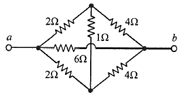
- 1
- 2
- 3
- 4
(정답률: 51%)
24. 회로에서 저항 5Ω의 양단 전압 VR(V)은?
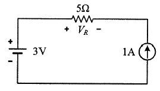
- -5
- -2
- 3
- 8
(정답률: 52%)
25. 그림과 같은 회로에 평형 3상 전압 200V를 인가한 경우 소비된 유효전력(kW)은? (단, R = 20Ω, X = 10Ω)
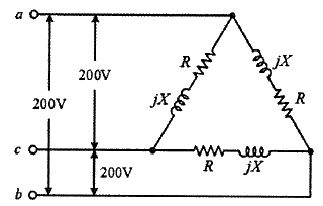
- 1.6
- 2.4
- 2.8
- 4.8
(정답률: 34%)
26. 자기용량이 10kVA인 단권변압기를 그림과 같이 접속하였을 때 역률 80%의 부하에 몇 kW의 전력을 공급할 수 있는가?
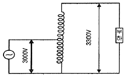
- 8
- 54
- 80
- 88
(정답률: 57%)
27. 그림의 논리회로와 등가인 논리게이트는?
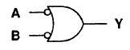
- NOR
- NAND
- NOT
- OR
(정답률: 55%)
28. 정현파 교류전압의 최댓값이 Vm(V) 이고, 평균값이 Vav(V)일 때 이 전압의 실횻값 Vrms(V)는?
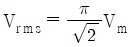
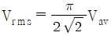
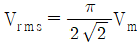
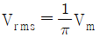
(정답률: 56%)
29. 그림 (a)와 그림 (b)의 각 블록선도가 등가인 경우 전달함수 G(s)는?
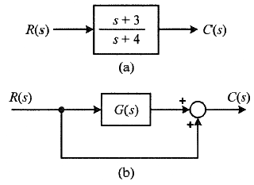
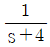
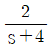
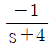
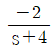
(정답률: 47%)
30. 회로에서 a와 b 사이에 나타나는 전압 Vab(V)는?
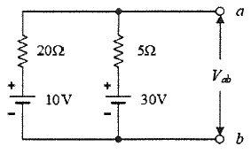
- 20
- 23
- 26
- 28
(정답률: 47%)
31. 단방향 대전류의 전력용 스위칭 소자로서 교류의 위상 제어용으로 사용되는 정류소자는?
- 서미스터
- SCR
- 제너다이오드
- UJT
(정답률: 71%)
32. 입력이 r(t)이고, 출력이 c(t)인 제어시스템이 다음의 식과 같이 표현될 때 이 제어시스템의 전달함수
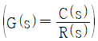
는? (단, 초깃값은 0이다.)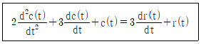
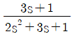
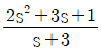
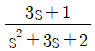
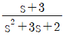
(정답률: 55%)
33. 직류전원이 연결된 코일에 10A의 전류가 흐르고 있다. 이 코일에 연결된 전원을 제거하는 즉시 저항을 연결하여 폐회로를 구성하였을 때 저항에서 소비된 열량이 24cal이었다. 이 코일의 인덕턴스는 약 몇 H 인가?
- 0.1
- 0.5
- 2.0
- 24
(정답률: 35%)
34. 60Hz, 4극 3상 유도전동기가 정격 출력일 때 슬립이 2%이다. 이 전동기의 동기속도(rpm)는?
- 1,200
- 1,764
- 1,800
- 1,836
(정답률: 49%)
35. 논리식 A·(A + B)를 간단히 표현하면?
- A
- B
- A · B
- A + B
(정답률: 60%)
36. 0℃에서 저항이 10Ω이고, 저항의 온도계수가 0.0043인 전선이 있다. 30℃에서 이 전선의 저항은 약 몇 Ω 인가?
- 0.013
- 0.68
- 1.4
- 11.3
(정답률: 45%)
37. 길이 1cm마다 감은 권선수가 50회인 무한장 솔레노이드에 500mA의 전류를 흘릴 때 솔레노이드 내부에서의 자계의 세기는 몇 AT/m 인가?
- 1,250
- 2,500
- 12,500
- 25,000
(정답률: 49%)
38. 회로의 전압과 전류를 측정하기 위한 계측기의 연결방법으로 옳은 것은?
- 전압계 : 부하와 직렬, 전류계 : 부하와 직렬
- 전압계 : 부하와 직렬, 전류계 : 부하와 병렬
- 전압계 : 부하와 병렬, 전류계 : 부하와 직렬
- 전압계 : 부하와 병렬, 전류계 : 부하와 병렬
(정답률: 64%)
39. 최대 눈금이 150V이고, 내부저항이 30kΩ인 전압계가 있다. 이 전압계로 750V 까지 측정하기 위해 필요한 배율기의 저항(kΩ)은?
- 120
- 150
- 300
- 800
(정답률: 47%)
40. 내압이 1.0kV이고 정전용량이 각각 0.01μF, 0.02μF, 0.04μF인 3개의 커패시터를 직렬로 연결했을 때 전체 내압은 몇 V 인가?
- 1,500
- 1,750
- 2,000
- 2,200
(정답률: 55%)
3과목: 소방관계법규
41. 소방시설공사업법령에 따른 완공검사를 위한 현장확인 대상 특정소방대상물의 범위 기준으로 틀린 것은?
- 연면적 1만제곱미터 이상이거나 11층 이상인 특정소방대상물(아파트는 제외)
- 가연성 가스를 제조⋅저장 또는 취급하는 시설 중 지상에 노출된 가연성 가스탱크의 저장용량 합계가 1,000t 이상인 시설
- 호스릴방식의 소화설비가 설치되는 특정소방대상물
- 문화 및 집회시설, 종교시설, 판매시설, 노유자시설, 수련시설, 운동시설, 숙박시설, 창고시설, 지하상가
(정답률: 65%)
42. 소방기본법령에 따른 특수가연물의 기준 중 다음 ( ) 안에 알맞은 것은?
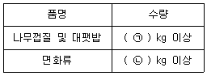
- ㉠ 200, ㉡ 400
- ㉠ 200, ㉡ 1,000
- ㉠ 400, ㉡ 200
- ㉠ 400, ㉡ 1,000
(정답률: 56%)
43. 화재예방, 소방시설 설치⋅유지 및 안전관리에 관한 법령상 스프링클러설비를 설치하여야 할 특정소방대상물에 다음 중 어떤 소방시설을 화재안전기준에 적합하게 설치하면 면제 받을 수 있는가?(문제 오류로 가답안 발표시 2번으로 발표되었지만 확정답안 발표시 1, 2, 4번이 정답처리 되었습니다. 여기서는 가답안인 2번을 누르시면 정답 처리 됩니다.)
- 포소화설비
- 물분무소화설비
- 간이스프링클러설비
- 이산화탄소소화설비
(정답률: 73%)
44. 소방기본법령상 출동한 소방대원에게 폭행 또는 협박을 행사하여 화재진압⋅인명구조 또는 구급활동을 방해한 사람에 대한 벌칙 기준은?
- 500만원 이하의 과태료
- 1년 이하의 징역 또는 1,000만원 이하의 벌금
- 3년 이하의 징역 또는 3,000만원 이하의 벌금
- 5년 이하의 징역 또는 5,000만원 이하의 벌금
(정답률: 58%)
45. 위험물안전관리법령상 제조소 또는 일반 취급소에서 취급하는 제4류 위험물의 최대 수량의 합이 지정수량의 48만배 이상인 사업소의 자체소방대에 두는 화학소방자동차 및 인원기준으로 다음 ( ) 안에 알맞은 것은?
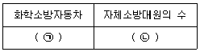
- ㉠ 1대, ㉡ 5인
- ㉠ 2대, ㉡ 10인
- ㉠ 3대, ㉡ 15인
- ㉠ 4대, ㉡ 20인
(정답률: 58%)
46. 화재예방, 소방시설 설치⋅유지 및 안전관리에 관한 법령상 펄프공장의 작업장, 음료수 공장의 충전을 하는 작업장 등과 같이 화재안전기준을 적용하기 어려운 특정소방대상물에 설치하지 아니할 수 있는 소방시설의 종류가 아닌 것은?
- 상수도소화용수설비
- 스프링클러설비
- 연결송수관설비
- 연결살수설비
(정답률: 37%)
47. 소방기본법의 정의상 소방대상물의 관계인이 아닌 자는?
- 감리자
- 관리자
- 점유자
- 소유자
(정답률: 68%)
48. 위험물안전관리법령상 위험물별 성질로서 틀린 것은?
- 제1류 : 산화성 고체
- 제2류 : 가연성 고체
- 제4류 : 인화성 액체
- 제6류 : 인화성 고체
(정답률: 73%)
49. 화재예방, 소방시설 설치⋅유지 및 안전관리에 관한 법령상 시⋅도지사가 소방시설 등의 자체점검을 하지 아니한 관리업자에게 영업정지를 명할 수 있으나, 이로 인해 국민에게 심한 불편을 줄 때에는 영업정지 처분을 갈음하여 과징금 처분을 한다. 과징금의 기준은?
- 1,000만원 이하
- 2,000만원 이하
- 3,000만원 이하
- 5,000만원 이하
(정답률: 58%)
50. 소방기본법령상 소방대장은 화재, 재난⋅재해 그 밖의 위급한 상황이 발생한 현장에 소방활동구역을 정하여 소방활동에 필요한 자로서 대통령령으로 정하는 사람 외에는 그 구역에의 출입을 제한할 수 있다. 다음 중 소방활동구역에 출입할 수 없는 사람은?
- 소방활동구역 안에 있는 소방대상물의 소유자⋅관리자 또는 점유자
- 전기⋅가스⋅수도⋅통신⋅교통의 업무에 종사하는 사람으로서 원활한 소방활동을 위하여 필요한 사람
- 시⋅도지사가 소방활동을 위하여 출입을 허가한 사람
- 의사⋅간호사 그 밖에 구조⋅구급업무에 종사하는 사람
(정답률: 56%)
51. 위험물안전관리법령상 취급하는 위험물의 최대수량이 지정수량의 10배 이하인 경우 공지의 너비 기준은?(문제 오류로 가답안 발표시 4번으로 발표되었지만 확정답안 발표시 모두 정답처리 되었습니다. 여기서는 가답안인 4번을 누르면 정답 처리 됩니다.)
- 2m 이하
- 2m 이상
- 3m 이하
- 3m 이상
(정답률: 69%)
52. 화재예방, 소방시설 설치⋅유지 및 안전관리에 관한 법령상 소방특별조사위원회의 위원에 해당하지 아니하는 사람은?
- 소방기술사
- 소방시설관리사
- 소방 관련 분야의 석사학위 이상을 취득한 사람
- 소방 관련 법인 또는 단체에서 소방 관련 업무에 3년 이상 종사한 사람
(정답률: 69%)
53. 소방기본법령상 특수가연물의 저장 및 취급기준이 아닌 것은? (단, 석탄⋅목탄류를 발전용으로 저장하는 경우는 제외)
- 품명별로 구분하여 쌓는다.
- 쌓는 높이는 20m 이하가 되도록 한다.
- 쌓는 부분의 바닥면적 사이는 1m 이상이 되도록 한다.
- 특수가연물을 저장 또는 취급하는 장소에는 품명⋅최대수량 및 화기취급의 금지표지를 설치해야 한다.
(정답률: 63%)
54. 화재예방, 소방시설 설치⋅유지 및 안전관리에 관한 법령상 소화설비를 구성하는 제품 또는 기기에 해당하지 않는 것은?
- 가스누설경보기
- 소방호스
- 스프링클러헤드
- 분말자동소화장치
(정답률: 62%)
55. 소방시설공사업법령상 하자보수를 하여야 하는 소방시설 중 하자보수 보증기간이 3년이 아닌 것은?
- 자동소화장치
- 비상방송설비
- 스프링클러설비
- 상수도소화용수설비
(정답률: 68%)
56. 위험물안전관리법령상 소화난이도등급 Ⅰ의 옥내탱크저장소에서 유황만을 저장⋅취급할 경우 설치하여야 하는 소화설비로 옳은 것은?
- 물분무소화설비
- 스프링클러설비
- 포소화설비
- 옥내소화전설비
(정답률: 54%)
57. 화재예방, 소방시설 설치⋅유지 및 안전관리에 관한 법령상 대통령령 또는 화재안전기준이 변경되어 그 기준이 강화되는 경우 기존 특정소방대상물의 소방시설 중 강화된 기준을 설치장소와 관계없이 항상 적용하여야 하는 것은? (단, 건축물의 신축⋅개축⋅재축⋅이전 및 대수선 중인 특정소방대상물을 포함한다.)
- 제연설비
- 비상경보설비
- 옥내소화전설비
- 화재조기진압용 스프링클러설비
(정답률: 64%)
58. 화재예방, 소방시설 설치⋅유지 및 안전관리에 관한 법령상 소방시설 등의 종합정밀점검 대상 기준에 맞게 ( )에 들어갈 내용으로 옳은 것은?
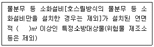
- 2,000
- 3,000
- 4,000
- 5,000
(정답률: 45%)
59. 화재예방, 소방시설 설치⋅유지 및 안전관리에 관한 법령상 건축허가 등의 동의대상물의 범위로 틀린 것은?
- 항공기 격납고
- 방송용 송⋅수신탑
- 연면적이 400제곱미터 이상인 건축물
- 지하층 또는 무창층이 있는 건축물로서 바닥면적이 50제곱미터 이상인 층이 있는 것
(정답률: 56%)
60. 소방기본법령상 화재의 예방상 위험하다고 인정되는 행위를 하는 사람에게 행위의 금지 또는 제한 명령을 할 수 있는 사람은?
- 소방본부장
- 시⋅도지사
- 의용소방대원
- 소방대상물의 관리자
(정답률: 67%)
4과목: 소방전기시설의 구조 및 원리
61. 소방시설용 비상전원수전설비의 화재안전기준(NFSC 602)에 따라 일반전기사업자로부터 특별고압 또는 고압으로 수전하는 비상전원수전설비의 종류에 해당하지 않는 것은?
- 큐비클형
- 축전지형
- 방화구획형
- 옥외개방형
(정답률: 50%)
62. 비상콘센트설비의 성능인증 및 제품검사의 기술기준에 따른 비상콘센트설비 표시등의 구조 및 기능에 대한 설명으로 틀린 것은?
- 발광다이오드에는 적당한 보호커버를 설치하여야 한다.
- 소켓은 접속이 확실하여야 하며 쉽게 전구를 교체할 수 있도록 부착하여야 한다.
- 적색으로 표시되어야 하며 주위의 밝기가 300lx 이상인 장소에서 측정하여 앞면으로부터 3m 떨어진 곳에서 켜진 등이 확실히 식별되어야 한다.
- 전구는 사용전압의 130%인 교류전압을 20시간 연속하여 가하는 경우 단선, 현저한 광속변화, 흑화, 전류의 저하 등이 발생하지 아니하여야 한다.
(정답률: 41%)
63. 비상방송설비의 화재안전기준(NFSC 202)에 따라 부속회로의 전로와 대지 사이 및 배선 상호 간의 절연저항은 1경계구역마다 직류 250V의 절연저항측정기를 사용하여 측정한 절연저항이 몇 MΩ 이상이 되도록 하여야 하는가?
- 0.1
- 0.2
- 10
- 20
(정답률: 58%)
64. 자동화재탐지설비 및 시각경보장치의 화재안전기준(NFSC 203)에 따라 환경상태가 현저하게 고온으로 되어 연기감지기를 설치할 수 없는 건조실 또는 살균실 등에 적응성 있는 열감지기가 아닌 것은?
- 정온식 1종
- 정온식 특종
- 열아날로그식
- 보상식 스포트형 1종
(정답률: 58%)
65. 자동화재속보설비의 속보기의 성능인증 및 제품검사의 기술기준에서 정하는 데이터 및 코드전송방식 신고부분 프로토콜 정의서에 대한 내용이다. 다음의 ( )에 들어갈 내용으로 옳은 것은?
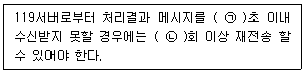
- ㉠ 10, ㉡ 5
- ㉠ 10, ㉡ 10
- ㉠ 20, ㉡ 10
- ㉠ 20, ㉡ 20
(정답률: 52%)
66. 유도등 및 유도표지의 화재안전기준(NFSC 303)에 따른 객석유도등의 설치기준이다. 다음 ( )에 들어갈 내용으로 옳은 것은?
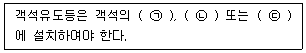
- ㉠ 통로, ㉡ 바닥, ㉢ 벽
- ㉠ 바닥, ㉡ 천장, ㉢ 벽
- ㉠ 통로, ㉡ 바닥, ㉢ 천장
- ㉠ 바닥, ㉡ 통로, ㉢ 출입구
(정답률: 67%)
67. 누전경보기의 형식승인 및 제품검사의 기술기준에 따라 외함은 불연성 또는 난연성 재질로 만들어져야 하며, 누전경보기의 외함의 두께는 몇 mm 이상이어야 하는가? (단, 직접 벽면에 접하여 벽 속에 매립되는 외함의 부분은 제외한다.)
- 1
- 1.2
- 2.5
- 3
(정답률: 23%)
68. 비상콘센트설비의 화재안전기준(NFSC 504)에 따라 비상콘센트설비의 전원부와 외함 사이의 절연저항은 전원부와 외함 사이를 500V 절연저항계로 측정할 때 몇 MΩ 이상이어야 하는가?
- 10
- 20
- 30
- 50
(정답률: 57%)
69. 자동화재탐지설비 및 시각경보장치의 화재안전기준(NFSC 203)에 따라 자동화재탐지설비의 감지기 설치에 있어서 부착높이가 20m 이상일 때 적합한 감지기 종류는?
- 불꽃감지기
- 연기복합형
- 차동식 분포형
- 이온화식 1종
(정답률: 61%)
70. 비상경보설비 및 단독경보형감지기의 화재안전기준(NFSC 201)에 따른 비상벨설비에 대한 설명으로 옳은 것은?
- 비상벨설비는 화재발생 상황을 사이렌으로 경보하는 설비를 말한다.
- 비상벨설비는 부식성가스 또는 습기 등으로 인하여 부식의 우려가 없는 장소에 설치하여야 한다.
- 음향장치의 음량은 부착된 음향장치의 중심으로부터 1m 떨어진 위치에서 60dB 이상이 되는 것으로 하여야 한다.
- 특정소방대상물의 층마다 설치하되, 해당 특정소방대상물의 각 부분으로부터 하나의 발신기까지의 수평거리가 30m 이하가 되도록 하여야 한다.
(정답률: 60%)
71. 비상방송설비의 화재안전기준(NFSC 202)에 따라 비상방송설비가 기동장치에 따른 화재신고를 수신한 후 필요한 음량으로 화재 발생 상황 및 피난에 유효한 방송이 자동으로 개시될 때까지의 소요시간은 몇 초 이하로 하여야 하는가?
- 5
- 10
- 20
- 30
(정답률: 68%)
72. 누전경보기의 형식승인 및 제품검사의 기술기준에 따라 감도조정장치를 갖는 누전경보기에 있어서 감도조정장치의 조정범위는 최대치가 몇 A이어야 하는가?
- 0.2
- 1.0
- 1.5
- 2.0
(정답률: 61%)
73. 자동화재탐지설비 및 시각경보장치의 화재안전기준(NFSC 203)에 따른 배선의 시설기준으로 틀린 것은?
- 감지기 사이의 회로의 배선은 송배전식으로 할 것
- 감지기회로의 도통시험을 위한 종단저항은 감지기회로의 끝 부분에 설치할 것
- 피(P)형 수신기의 감지기 회로의 배선에 있어서 하나의 공통선에 접속할 수 있는 경계구역은 5개이하로 할 것
- 수신기의 각 회로별 종단에 설치되는 감지기에 접속되는 배선의 전압은 감지기 정격전압의 80% 이상이어야 할 것
(정답률: 69%)
74. 무선통신보조설비의 화재안전기준(NFSC 5⑤)에 따른 용어의 정의로 옳은 것은?
- “혼합기”는 신호의 전송로가 분기되는 장소에 설치하는 장치를 말한다.
- “분배기”는 서로 다른 주파수의 합성된 신호를 분리하기 위해서 사용하는 장치를 말한다.
- “증폭기”는 두 개 이상의 입력신호를 원하는 비율로 조합한 출력이 발생되도록 하는 장치를 말한다.
- “누설동축케이블”은 동축케이블의 외부도체에 가느다란 홈을 만들어서 전파가 외부로 새어나갈 수 있도록 한 케이블을 말한다.
(정답률: 62%)
75. 비상조명등의 화재안전기준(NFSC 304)에 따라 비상조명등의 조도는 비상조명등이 설치된 장소의 각 부분의 바닥에서 몇 lx 이상이 되도록 하여야 하는가?
- 1
- 3
- 5
- 10
(정답률: 61%)
76. 화재안전기준(NFSC)에 따른 비상전원 및 건전지의 유효 사용시간에 대한 최소 기준이 가장 긴 것은?
- 휴대용비상조명등의 건전지 용량
- 무선통신보조설비 증폭기의 비상전원
- 지하층을 제외한 층수가 11층 미만의 층인 특정소방대상물에 설치되는 유도등의 비상전원
- 지하층을 제외한 층수가 11층 미만의 층인 특정소방대상물에 설치되는 비상조명등의 비상전원
(정답률: 54%)
77. 비상경보설비 및 단독경보형감지기의 화재안전기준(NFSC 201)에 따른 단독경보형감지기의 시설기준에 대한 내용이다. 다음 ( )에 들어갈 내용으로 옳은 것은?
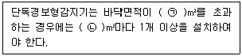
- ㉠ 100, ㉡ 100
- ㉠ 100, ㉡ 150
- ㉠ 150, ㉡ 150
- ㉠ 150, ㉡ 200
(정답률: 60%)
78. 무선통신보조설비의 화재안전기준(NFSC 5⑤)에 따라 무선통신보조설비의 누설동축케이블 및 안테나는 고압의 전로로부터 1.5m 이상 떨어진 위치에 설치해야 하나 그렇게 하지 않아도 되는 경우는?
- 끝부분에 무반사 종단저항을 설치한 경우
- 불연재료로 구획된 반자 안에 설치한 경우
- 해당 전로에 정전기 차폐장치를 유효하게 설치한 경우
- 금속제 등의 지지금구로 일정한 간격으로 고정한 경우
(정답률: 58%)
79. 유도등 및 유도표지의 화재안전기준(NFSC 303)에 따라 유도표지는 각 층마다 복도 및 통로의 각 부분으로부터 하나의 유도표지까지의 보행거리가 몇 m 이하가 되는 곳과 구부러진 모퉁이의 벽에 설치하여야 하는가? (단, 계단에 설치하는 것은 제외한다.)
- 5
- 10
- 15
- 25
(정답률: 55%)
80. 자동화재탐지설비 및 시각경보장치의 화재안전기준(NFSC 203)에 따른 발신기의 시설기준에 대한 내용이다. 다음 ( )에 들어갈 내용으로 옳은 것은?
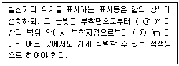
- ㉠ 10, ㉡ 10
- ㉠ 15, ㉡ 10
- ㉠ 25, ㉡ 15
- ㉠ 25, ㉡ 20
(정답률: 64%)